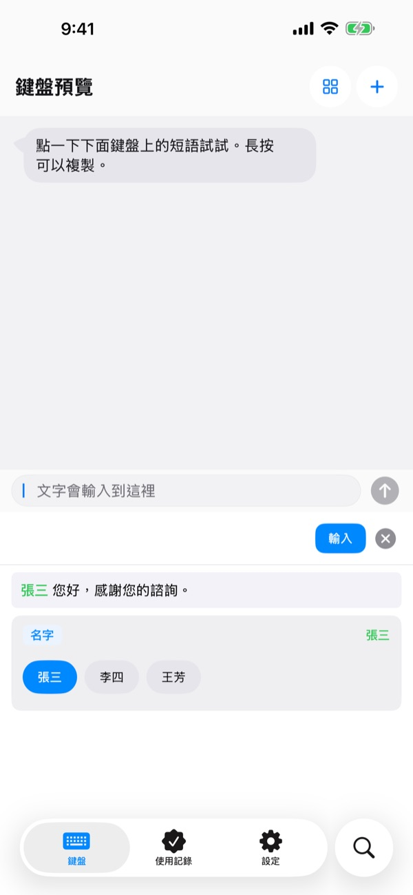
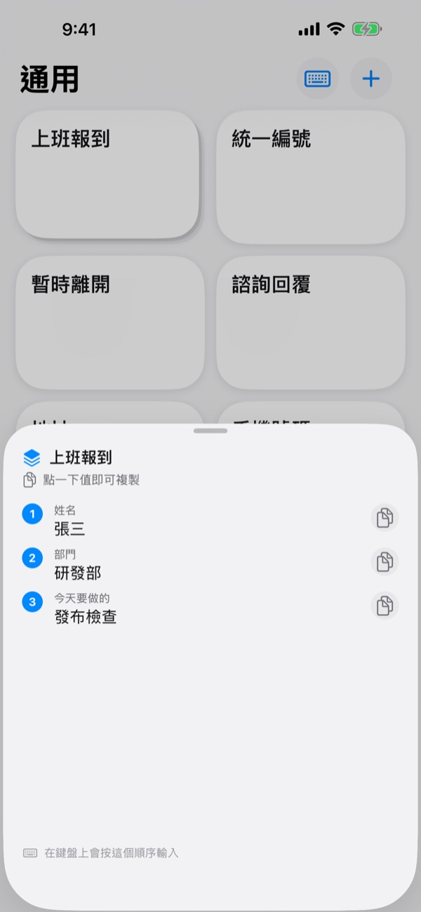
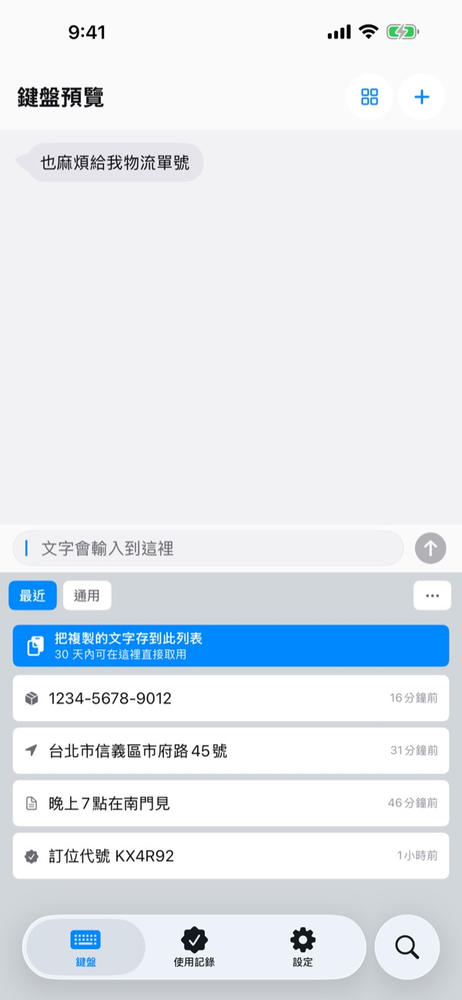
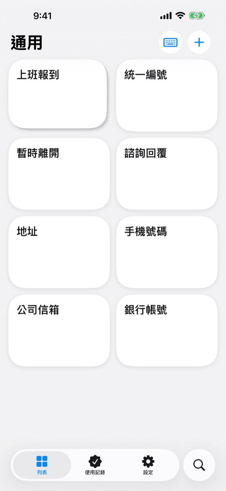

同樣的話
別再打第二遍
匯款帳號、收件地址、常用的郵件開頭，存一次就夠了。在 LINE、郵件、Safari，任何能打字的地方，從鍵盤上點一下就輸入。
前 100 次輸入，所有功能都免費。
在這裡試試看
這就是應用程式裡的「鍵盤預覽」畫面。在 iPhone 上，任何能打字的地方都能叫出這個鍵盤。
今天你打了幾次銀行帳號？
聚餐完朋友問錢要轉到哪個帳號，你打開銀行應用程式複製號碼；收件地址又一個字一個字地輸入；每封客戶郵件都重寫一次同樣的問候。剪貼鍵盤把這些話放在鍵盤上，需要時點一下就出來。
只填會變的地方
範本把 {姓名}、{日期} 這類每次都會變的地方留成空格。
輸入時只問空格，以前填過的值可以直接選。

幾個值，依序輸入
短語堆把姓名、部門、今天的待辦這樣的幾個值放在同一個鍵上。
點一下輸入目前這一格，再用旁邊的箭頭切到下一格。

複製過的，鍵盤上也有
剛複製的包裹單號、地址、電話，都會出現在鍵盤的「最近」標籤裡。
信箱、電話、地址、卡號、IBAN 都認得出來並自動分類，之後一秒就能找到。

敏感號碼，鎖起來
護照號碼、卡號可以存成加密短語，用 Face ID 鎖住。
帳號寫在紙上？拍張照，用手指劃過需要的那幾個字就好。

三個步驟就能開始
- 1
新增鍵盤
設定 > 一般 > 鍵盤 > 鍵盤 > 新增新鍵盤，選擇剪貼鍵盤。
- 2
允許完全取用
鍵盤要讀取你在應用程式裡存好的短語，需要這項權限。你打的字不會離開裝置。
- 3
長按地球鍵切換
在任何應用程式裡，長按鍵盤上的 🌐，選擇剪貼鍵盤，然後點一下按鍵。
鍵盤上能放什麼
- 短語
- 存什麼就輸入什麼，換行和表情符號也原樣保留。
- 範本
- 用大括號留出空格，例如 {姓名}，每次輸入時填上。
- 短語堆
- 幾個值放在同一個鍵上，用箭頭切到下一格。
- 加密短語
- 通過 Face ID 或 Touch ID 驗證後才會輸入。（Pro）
- 圖片短語
- 點一下就複製圖片，直接貼到訊息裡。
- 剪貼簿記錄
- 複製過的內容依類型整理好，隨時再用。
- 掃描文字
- 在照片裡劃過文字，只取那一段。照片不會保存。
完整使用指南請見 m1zz.github.io/ClipKeyboard/zh-Hant/tutorial.html。
先用 100 次，再決定
免費
- 短語輸入滿 100 次之前，所有功能都能用
- 之後，已經建好的內容照常使用
- 新建內容上限：短語 10 個、範本 3 個、短語堆 3 個、圖片 5 張
- 剪貼簿記錄 50 筆
Plus · Pro
- Plus：短語、範本、短語堆、圖片不限數量，剪貼簿記錄 100 筆
- Pro：包含 Plus 的所有功能，另有 iCloud 備份、Face ID 鎖定、多裝置同步（測試版）
兩種都可以選擇按年訂閱，或一次買斷（永久使用）。
不付費或訂閱到期，你的短語也不會被刪除。沒有廣告。
常見問題
鍵盤上看不到我的短語。
很可能沒有開啟完全取用。前往 設定 > 一般 > 鍵盤 > 鍵盤 > 剪貼鍵盤，開啟「允許完全取用」。
可以繼續用我平常的鍵盤嗎？
可以。輸入短語後，會自動切回你原本的鍵盤，這個動作可以在設定裡關閉。也可以直接用剪貼鍵盤打字，它的按鍵配置和 iPhone 內建鍵盤一樣，支援 23 種語言。
可以打中文嗎？
可以輸入注音和拼音，但目前還不能轉換成漢字。打中文時，請繼續使用你平常的輸入法。
複製的內容沒有出現在記錄裡。
iOS 不允許其他應用程式自行讀取剪貼簿。先打開一次剪貼鍵盤應用程式，再使用鍵盤，內容就會出現在記錄裡。
怎麼刪除範本裡存過的值？
在範本編輯畫面點一下空格，就能看到存過的值。滑動即可逐一刪除。
輸入滿 100 次之後會怎樣？
你建好的短語、範本、短語堆都能照常使用。免費上限只對新建的內容生效。想解除上限，可以選擇 Plus 或 Pro。
我的短語會被傳到別的地方嗎？
不會。短語只儲存在這台裝置上，我們不收集其內容。開啟 iCloud 備份後，會加密存進你自己的 iCloud。我們只收集匿名使用統計來改善應用程式，也不使用任何第三方分析工具。
換了新手機，短語怎麼辦？
開啟 Pro 的 iCloud 備份後，在新裝置上登入同一個 Apple 帳號即可回復，圖片短語也會一起帶過去。請注意，回復會取代那台裝置上原有的短語。
iPad 上能用嗎？
可以。iPhone 和 iPad 都能用。
我的問題這裡沒有。
請透過下方的信箱告訴我們遇到了什麼狀況，我們通常一天內回覆。
有問題或建議，請寫信到 leeo@kakao.com。